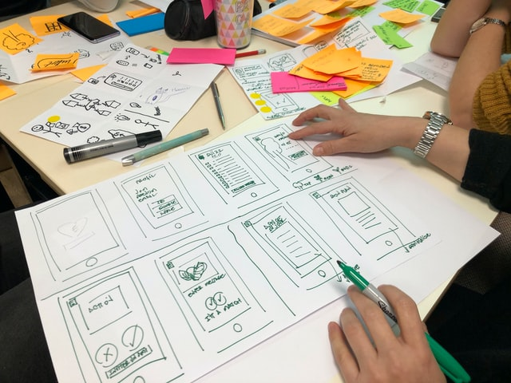
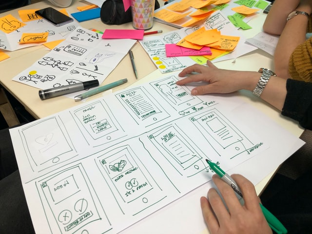

The face behind Sandra Designs
Hi! As you already know, my name is Sandra Krejcir.
Being a young Croatian girl who moved to Denmark only
a year ago, I faced a lot of challenges. However, that’s
exactly what pushed me to take risks, face my fears, and
work harder than ever to achieve everything I set my mind
on.
I am very devoted and ambitious, but not led by the means of success or fortune. Moreover I strive to learn and gain experience wherever/ whenever I can, in order to become the best version of myself.
 
